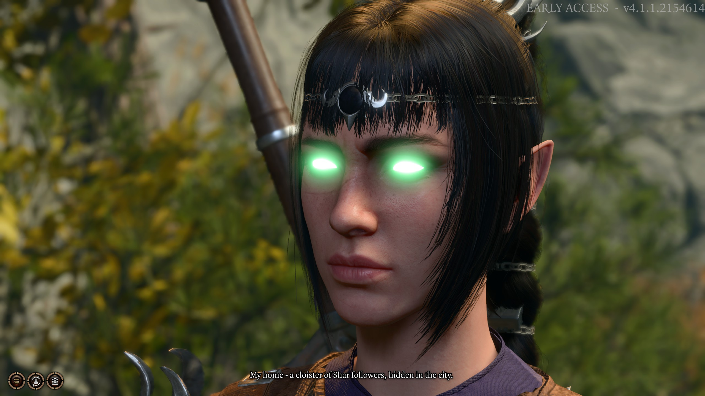

Passion in Game Design
My reaction to MTX in my $70 game.
Baldur's Gate 3 is far and away the best game I have ever had the pleasure of playing. A buddy of mine and I have put almost 90 hours into a coop campaign, 40 in the first week following release. BG3 is based on the DnD 5e system. This is a D20 tabletop roleplaying game system that is widely popular. It took seven years to make Baldur's Gate 3, and there's a good reason for it: it's a masterpiece.
I have never played anything like Baldur's Gate. For the past nine years, I've been hooked to the likes of Destiny, COD, CS:GO, and a bit of WoW here and there. Roleplaying games like this were relics to me. I've played Fallout and Skyrim; I thought I know what it meant for a game to be an "RPG". I could not have been any more wrong.
BG3 takes roleplaying to an extreme that I thought theoretically impossible. The "theoretically impossible" amounts to 17,000 possible ending permutations and 173 hours of raw cutscene time. I have started at least half a dozen playthroughs with friends and alone, and not a single one has been the same.
Now the AAA gaming industry would have you believe that MTX are a "necessary evil" to keep up with development costs. Every single game I have played in the last two years, with the exception of two, have had some kind of battlepass and cosmetic store. Baldur's Gate has nothing. I mean it, there's not a single microtransaction in the entire game, and yet they have created argueably one of the most impressive and impactful games in the last decade. It's easy to see now, following release, why so many developers on twitter cried out in unison, "Don't make BG3 the new standard!" Well, it's too late. There hasn't been a word in the entire game that I would consider "cringe" nor that isn't accompanied by genuinely good looking animation.